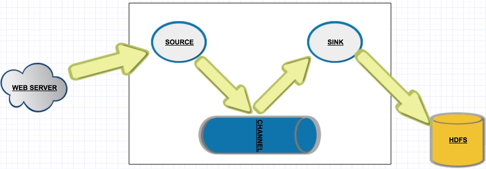
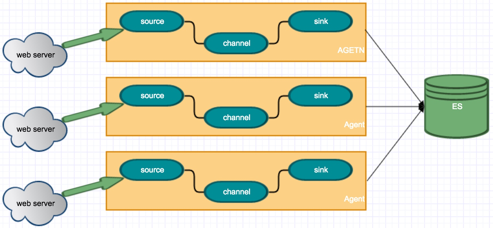
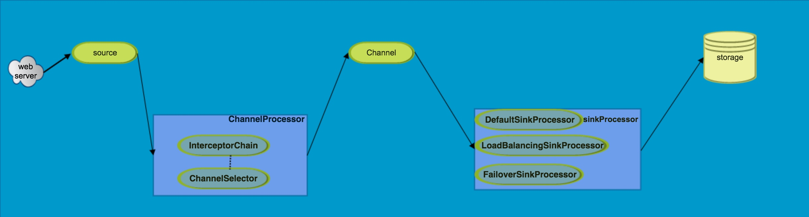
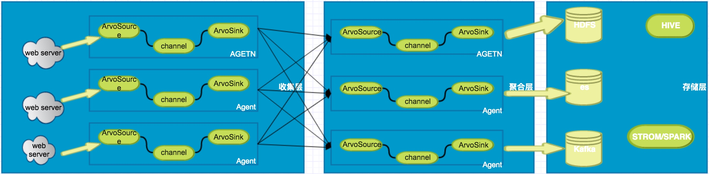

数据流模型

flume 中基本概念
1.Event:一个流经Agent的基本数据单位;Event从Source流向Channel最后到Sink。实现了Event接口。在Event的流向中,可以设置可选的header参数。
2.Agent:一个Agent表示一个拥有一些组件(source,channel,sink)的jvm进程。这些组件允许，Events从一个外部源,流向下一个目的地。
3.flow:表示一个数据流向
4.source:source 消费可以识别格式的Events。这些Events可以通过像web server的客户端发送。例如arvoSource 可以从client或者其他flume agent 接受arvoEvents.当Source接受到Events时，将它存储在一个或者多个Channel中
5.Channel:是一个被动存储。他会存储接收到的Events直到这些Events被Sink消费掉。比如fileChannel，用贝本地文件系统作为后备存储；
6.Sink:Sink消费channel中的数据。sink负责将Event从channel中移除，并且将Events放在外部存储如HDFS(这可以通过HDFSSINK实现)或者传送给下一个Flume agent中的source。因为Flume中有Channel的存在,在一个给定的Agent中source和sink可以异步的执行
简单的日志收集
假设我们要收集ng的日志。我们可以按照以下的方案进行部署。

流程如下
1.每台websever 上部署一个flume agent
2.使用tail 命令
3.channel可以使用memorychannel
4.sink统一写到es服务器中。前端使用kibana查询
虽然上面的应用场景可以满足需求。但是缺点也是非常的明显
1.各环节丢失数据的可能性较大（如果可以容忍数据丢失，则关系不大）
2.每台webserver上部署一个flume agent，不利于维护。比如 sink还想往kafka写，那么所有的flume agent都需要更改。
复杂的日志收集
先来看看Event在flume flow中的扭转流程:
1.source 接收Event
2.source 将Event传送给ChannelProcessor
3.在ChannelProcessor中收件会将event传递给InterceptorChain,InterceptorChain中包含多个Interceptor。Interceptor的概念就相当于java web开发中的servlet的概念。提供了一种修改或者删除Event的能力.比如Timestamp Interceptor 将会在Event的header中加入Event被处理的时间戳,key为timestamp。
4.当Event被Interceptor处理后就会通过ChannelSelector 选择合适的channel，将Event发送到Channel中。
flume中提供了两种方式 :
* MultiplexingChannelSelector 多路复用选择器
* ReplicatingChannelSelector 复制选择器
5.sink从channel中消费数据，这里和source向channel中存放数据是异步的。所以sink，只需要监听和自己关联的channel的变化即可。对于sink,提供了三种策略:
- DefaultSinkProcess ：失败了就失败了，稍后进行重试
- LoadBalancingSinkProcessor:负载均衡，有RandomOrder,RoundRobin和FixedOrderSelector三种选择
- FailoverSinkProcessor:给多个sink定义优先级，如果其中一个失败了，则发送到下一个优先级的Sink。如果执行过程中Sink抛出异常，那么将该Sink从存活的队列中移除。然后指数级时间重试。默认开始等待1s重试。最大等待时间是30s。当Sink恢复后将会加入存活的队列中。
基于上面分析，可以基本画出flume event的基本流转

基于第一种方式的搜集方式和Event数据流转的分析。如果我们需要采集日志，整体架构可以采用下面的方式进行部署。

- 在收集层，agent和web server部署在同一台机器上。(这里我们也可以开发flume的Embedded agent)通过RPC将数据流入聚合层。这一层应该快速的将日志收集到聚合层。
- 聚合层进行日志数据的聚合和收集，在这一层，可以做容错处理，如负债均衡或者failover.以提升可靠性。在这一层，数据量大时可以打开fileChannel，作为数据缓冲区，避免数据的丢失。以后主要的维护工作也主要在这一层上面。
- 在存储层，一般会流向hdfs，kafka 以供离线和实时的数据分析。